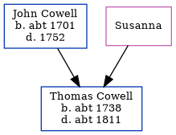

Thomas Cowell c1738 - c1811
[ Home ] | [ Calendar ] | [ Surnames Index ] | [ Errors ] | [ Family History ]The child of John Cowell and Susanna, Thomas Cowell, the fifth times great-uncle of Nigel Horne, was born c. 1738 and baptised in Minster, Thanet, Kent, England on 10 Jan 1738.
He died c. 1811 and was buried in Margate, Kent, England on 5 Oct 18111,2.
Parents
- John was born c. 1701
Citations
- Kent, Canterbury Archdeaconry burials 1538-1988 - Findmypast
- Kent, Canterbury Archdeaconry burials 1538-1988 - Findmypast
Media
Kent, Canterbury Archdeaconry burials 1538-1988 - GBPRS/CANT/D/95006418
Kent, Canterbury Archdeaconry burials 1538-1988 - GBPRS/CANT/D/95164836
Canterbury Baptisms Transcription - GBPRS-CANT-B-96507661
Family Tree
Map
Generated by ged2site. Last updated on Jul 3, 2024
Known Issues
Birth date (abt 1738) has no citations
Death date (abt 1811) has no citations
Date of birth is known, but not place
Date of death is known, but not place